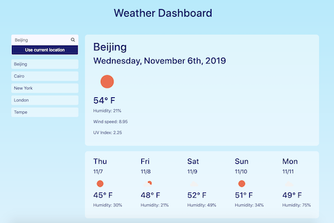
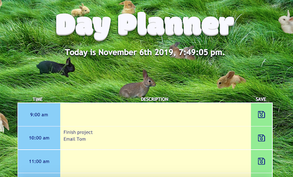

Derek Stoeckmann
Full-stack web developer, educator, and musician who loves JavaScript and algorithms.
d.stoeckmann@gmail.com | (480) 228-1008
GitHub
LinkedIn
Resume
Some of my projects

Weather Dashboard
Link
GitHub
A weather app that allows users to find weather information and a five day forecast for any city world-wide (or their current location)

Day Planner
Link
GitHub
A day planner app that allows users to save text notes for themselves
Code Quiz
Link
GitHub
A quiz app that allows users to choose between multiple timed quizzes and saves their top 10 high scores to local storage